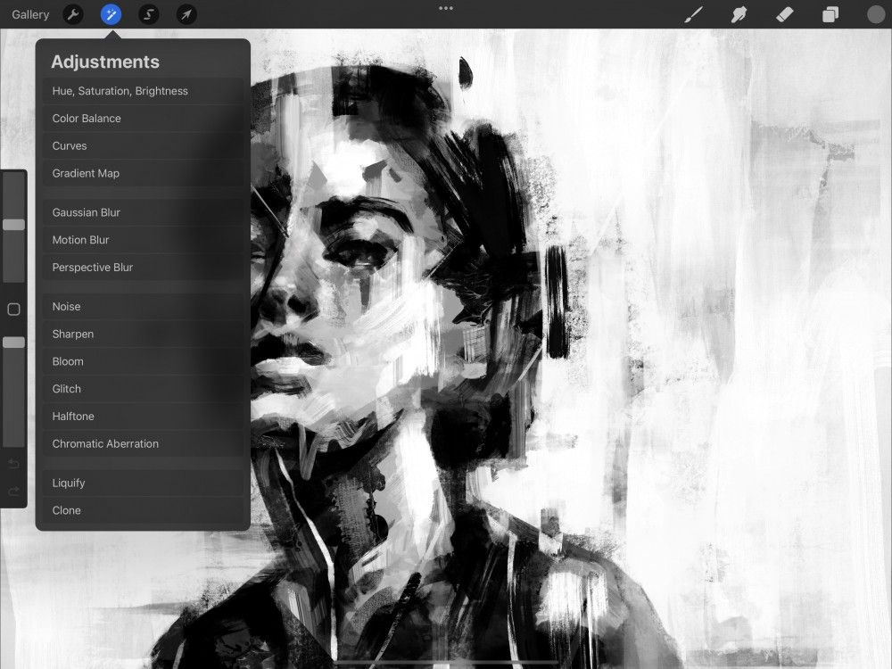

📖 Đã dịch sang tiếng Việt. Thuật ngữ chuyên môn giữ tiếng Anh — rê chuột để xem nghĩa (tooltip).
Chromatic Aberration
Thêm hiệu ứng Chromatic Aberration vào các ảnh của bạn.
Dịch chuyển mặt phẳng đỏ và lam của ảnh RGB để mô phỏng hiệu ứng Chromatic Aberration của ống kính máy ảnh. Trong nhiếp ảnh, hiệu ứng này khá tinh tế và trông như một quầng sáng lam hoặc đỏ nhẹ. Procreate cho bạn toàn quyền kiểm soát hướng và khoảng cách của quang sai. Việc này cho phép bạn phóng đại hiệu ứng.

Chạm Adjustments → Chromatic Aberration để vào giao diện Chromatic Aberration.
Bộ lọc Chromatic Aberration đi kèm hai chế độ khác nhau:
Perspective (Phối cảnh)
Perspective cho phép bạn đặt một điểm tiêu điểm, từ đó quang sai sắc sẽ xuất phát.
Displace (Dịch chuyển)
Displace cho phép bạn dịch chuyển quang sai sắc theo chiều ngang và dọc.
Perspective Mode (Chế độ phối cảnh)
Áp dụng Chromatic Aberration theo hướng tâm từ một điểm tiêu điểm ở bất kỳ đâu trên khung vẽ.

Touch Controls (Điều khiển chạm)
Trượt sang phải và trái để thay đổi lượng Chromatic Aberration được áp dụng lên ảnh.
Ở trên cùng khung vẽ bạn sẽ thấy một thanh có nhãn Chromatic Aberration. Thanh này hiển thị lượng Chromatic Aberration áp dụng lên ảnh tính bằng phần trăm.
Ban đầu nó đặt ở 0% Chromatic Aberration. Kéo ngón tay sang phải để tăng mức độ tách biệt giữa đỏ và lam. Kéo ngón tay sang trái để giảm mức độ tách biệt.
Giao diện
Đặt một Focal Point và kiểm soát lượng Transition và Fall off của Chromatic Aberration.
Focal Point (Điểm tiêu điểm)
Khi Chromatic Aberration vừa kích hoạt, bạn sẽ thấy một vòng tròn nhỏ có bóng ở giữa khung vẽ — đó là Focal Point. Chromatic Aberration sẽ tỏa ra từ tâm của Focal Point. Hiệu ứng trở nên rõ hơn khi càng xa tâm của Focal Point.
Chạm và kéo chấm trắng ở tâm Focal Point để đặt nó vào vị trí mong muốn. Bạn có thể đặt điểm tiêu điểm ở trong và ngoài khung vẽ. Để đặt Focal Point ngoài khung vẽ, hãy thu nhỏ khung vẽ. Sau đó kéo Focal Point đến vị trí mong muốn bên ngoài vùng khung vẽ.
Transition (Chuyển tiếp)
Thanh trượt Transition điều khiển lượng làm mờ áp dụng cho Chromatic Aberration tỏa ra từ điểm tiêu điểm. 0% sẽ mang cho viền của Chromatic Aberration một diện mạo tinh tế, mềm mại. 100% sẽ làm cho viền này cứng hơn và định nghĩa rõ hơn.
Fall off (Phai mờ)
Thanh trượt Fall off điều khiển khoảng cách hướng tâm từ Focal Point trước khi bất kỳ hiệu ứng nào được áp dụng. 0% sẽ áp dụng Chromatic Aberration trực tiếp từ viền của Focal Point. 100% sẽ áp dụng một vùng Fall off rõ ràng từ Focal Point đến viền khung vẽ trước khi hiệu ứng được áp dụng.
Thử nghiệm để hiểu trực quan cách Transition và Fall off ảnh hưởng đến Chromatic Aberration. Trượt lượng Chromatic Aberration lên 100% rồi di chuyển các thanh trượt Transition và Fall off qua lại.
Displace Mode (Chế độ dịch chuyển)
Áp dụng Chromatic Aberration trên toàn bộ ảnh.
Khác với chế độ Perspective, Displace không dùng điểm tiêu điểm. Displace tác động lên Chromatic Aberration trên ảnh bằng cách cho phép bạn kéo hiệu ứng đến bất cứ đâu bạn muốn.
Touch Controls (Điều khiển chạm)
Kiểm soát lượng và hướng của Chromatic Aberration bằng một cử chỉ.
Khi ở chế độ Displace, hãy chạm và kéo để đặt khoảng cách và hướng của các mặt phẳng đỏ và lam trong Chromatic Aberration
Giao diện
Điều chỉnh lượng Blur và Transparency của Chromatic Aberration.
Thanh trượt Blur điều khiển lượng làm mờ áp dụng cho Chromatic Aberration. Ban đầu nó đặt ở 0% hoặc không Blur. Kéo thanh trượt sang phải sẽ tăng độ mềm và độ mờ của Chromatic Aberration.
Transparency (Độ trong suốt)
Thanh trượt Transparency điều khiển lượng trong suốt áp dụng cho Chromatic Aberration. Ban đầu nó đặt ở 0% hoặc không Transparency. Kéo thanh trượt sang phải sẽ giảm Transparency của Chromatic Aberration.
Commit Changes (Lưu thay đổi)
Lưu toàn bộ thay đổi bằng một cú chạm.
Để lưu thay đổi và thoát khỏi Adjustments, hãy chạm lại vào biểu tượng Adjustments.
Để lưu thay đổi và ở lại trong Chromatic Aberration, hãy chạm khung vẽ để mở Adjustment Actions rồi chạm Apply.
Still have questions?
If you didn't find what you're looking for, explore our video resources on YouTube or contact us directly. We’re always happy to help.